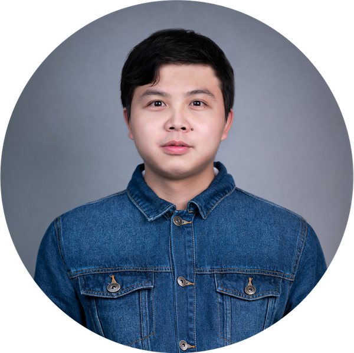

|  | Qi Wang (王琦) |
Journals:
[1] Qi Wang, Liaomo Zheng, Shiyu Wang, Xinjun Liu, Wei Guo, 'A Robotic Arm Pose Estimation Method Based on Lightweight Stacked Hourglass Network,' Journal of Chinese Computer Systems, 2021. (CCF B Chinese Recommended Journal, Chinese Core)
Conferences:
[2] Qi Wang , Liaomo Zheng, Shiyu Wang, Xinjun Liu, 'Lightweight Stacked Hourglass Network for Efficient Robotic Arm Pose Estimation,' IEEE International Conference on Computer and Communications(ICCC), 2021.(EI, Best Presentation Award)
[1] Liaomo Zheng, Xiaojie Wang, Qi Wang , Shiyu Wang, Xinjun Liu, 'A Fabric Defect Detection Method Based on Improved YOLOv5,' IEEE International Conference on Computer and Communications(ICCC), 2021.(EI)
Book:
[1] Qi Wang, Yiyuan Yang, Ji Jiang, 'Easy RL: Reinforcement Learning Tutorial' (Easy RL：强化学习教程), Posts & Telecom Press, 2022. (Excellent book for 2022 Q1th in PTP, Bestselling New Book of the 2022 in PTP Epubit). This book is recommended by many famous reinforcement learning experts, such as Hung-yi Lee(Associate Professor at Taiwan University), Shengbo Li(Professor at Tsinghua University), Jun Wang(Professor at UCL), Bolei Zhou(Assistant Professor at UCLA), etc. [GitHub Repo] [Online version] [E-book] [Douban] [Taobao] [Dangdang] [Jingdong]
Patents:
[2] Qi Wang, Lunxing Li, Shiyu Wang, Xinjun Liu, Xiaojie Wang, Yuhu Han, 'A Robotic Arm Pose Estimation Method Based on Lightweight Stacked Hourglass Network', Chinese invention patent, application number: 202110269893.X.
[1] Qiang Zhang, Qi Wang, Dongyang Dou, Peng Qi, Shiyu Wang, Xiaojie Wang, Xinjun Liu, Yuhu Han , 'A Robotic Arm Pose Estimation Method Based on Lightweight Stacked Hourglass Network', Chinese invention patent, application number: 202110269893.X.
Open-Source Projects:
Research Projects: